Perhaps one of the most recognizable hallmarks of emo music (particularly of the early 2000s variety) is its gratuitously long song titles. You might think of Saosin’s literary-minded “They Perched On Their Stilts, Pointing And Daring Me To Break Custom.” Or maybe Panic! At The Disco’s pedantic “There's a Good Reason These Tables are Numbered Honey, You Just Haven't Thought of It Yet.” In 2005, Fall Out Boy mastered the form on their hit album From Under The Cork Tree, which features some of the longest titles in emo including “I Slept With Someone in Fall Out Boy and All I Got Was This Stupid Song Written About Me,” “Get Busy Living Or Get Busy Dying (Do Your Part to Save the Scene and Stop Going To Shows),” and the cheekily-titled opening track “Our Lawyer Made Us Change The Name of This Song So We Wouldn’t Get Sued,” originally titled “My Name Is David Ruffin And These Are The Temptations.”
When we talk about “emo style,” your mind might immediately jump to long bangs hanging over darkly-pained eyes and Converse low tops. But before we talk about emo fashion, I want to point out the way that the stylization of emo’s “look” in the 2000s resonated with the stylization of the music itself. In the hands of a writer like Pete Wentz, emo music took on a campy, ironic quality that infused a genre previously tied to serious emotional expression with a certain degree of humor. In the 2000s, emo abandoned the more minimalist fashion stylings of earlier hardcore and emo scenes in favor of performativity and spectacle. In “Our Lawyer…”, Fall Out Boy vocalist Patrick Stump sings:
We’re only liars, but we’re the best
We’re only good for the latest trends
We’re only good so you can have almost famous friends
Besides, we’ve got such good fashion sense…
It’s worth noting that 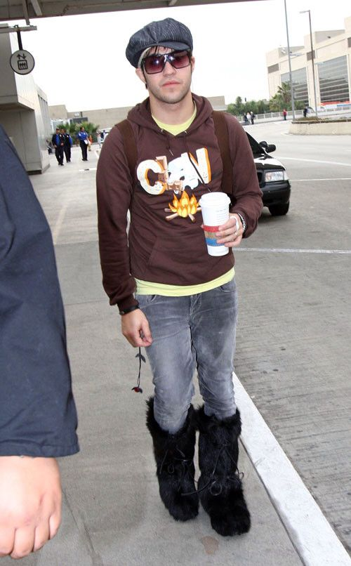
Pete’s reference to fashion here is particularly interesting to me for the way it seems to go against everything that emo of the 80s and 90s stood for. 80s and 90s emo was all about a version of authenticity that saw masculine aesthetics as the “real” and feminine aesthetics (i.e. fashion) as a “performance.” This line on the opening track of the band’s breakthrough album seems to draw a line in the sand in the history of emo, declaring (or at least recognizing) that emo in the internet era would become an aesthetically-driven phenomenon where fashion was maybe just as important at the music itself. (Someone better check on Ian MacKaye.)
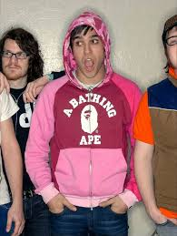
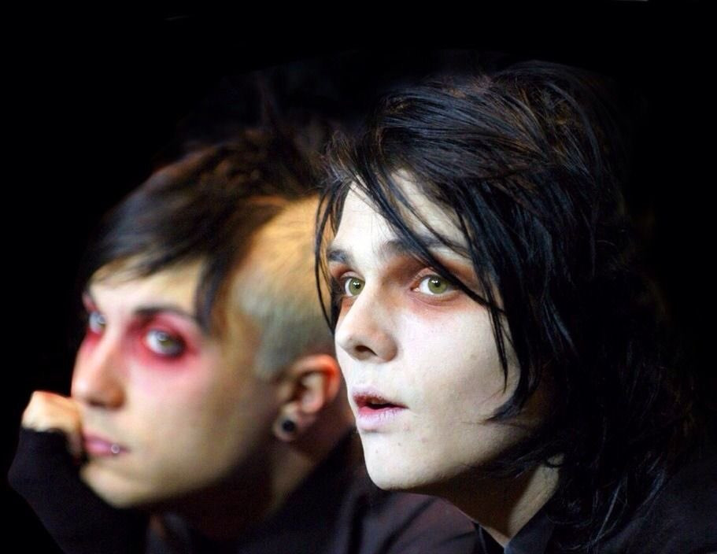
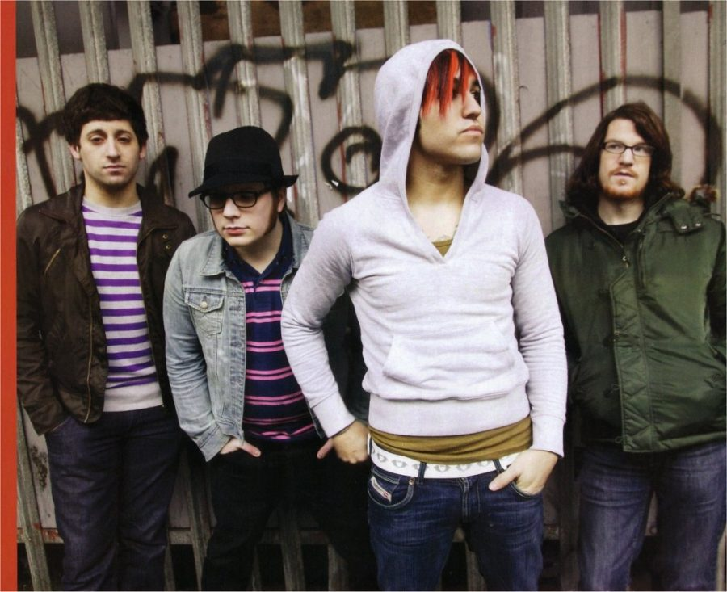
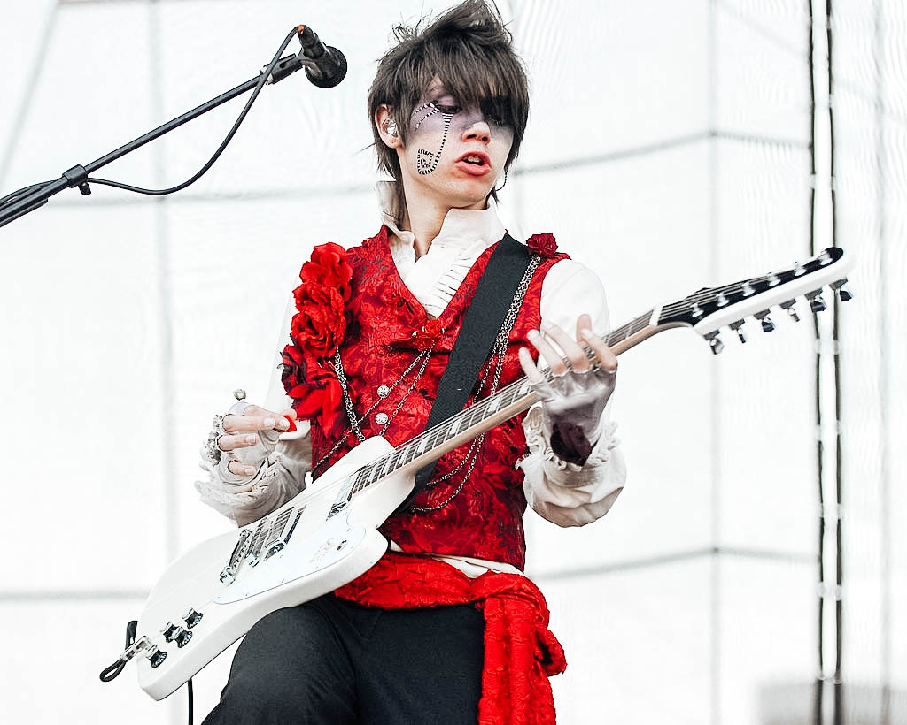
In the 2000s, emo turned away from its  stylistically masculine roots and started to embrace a more androgynous and feminine look. One of the favorite jokes of music journalists and non-emo rock fans in the early 2000s what that no one could tell the boys and the girls apart. Band members constantly made self-effacing jokes about their feminine presentation, which included things like women’s skinny jeans, makeup, painted nails, and other feminine or queer-coded accessories. “Guyliner” was also a huge talking point at the time, and was often used as a shorthand to belittle emo men for their embrace of “feminine” emotions and aesthetics. Eventually, this type of androgyny came to define what “emo” looked like as a subculture.
stylistically masculine roots and started to embrace a more androgynous and feminine look. One of the favorite jokes of music journalists and non-emo rock fans in the early 2000s what that no one could tell the boys and the girls apart. Band members constantly made self-effacing jokes about their feminine presentation, which included things like women’s skinny jeans, makeup, painted nails, and other feminine or queer-coded accessories. “Guyliner” was also a huge talking point at the time, and was often used as a shorthand to belittle emo men for their embrace of “feminine” emotions and aesthetics. Eventually, this type of androgyny came to define what “emo” looked like as a subculture.
Just like its 70s predecessor glam rock, emo fashion revolves specifically around a feminine androgyny. This separates it from the majority of underground rock cultures in the United States, where “androgyny” usually consists of women adopting masculine-coded aesthetics (punk, hardcore, grunge, etc.) Because androgyny in emo centers around traditionally feminine fashion items like fitted clothing and makeup, emo’s androgyny privileges women in a way that masculine-aligned androgynous subcultures don’t. This isn’t to say that a subculture being biased toward traditionally masculine aesthetics is a problem, but it does typically make it easier for certain (masculine) people to accrue subcultural capital. Lead guitarist of 70s punk band The Slits, Viv Albertine speaks about how punk freed her by offering something other than the traditional feminine archetype,1 and also speaks about how early in her life, glam rock’s aesthetic bias toward femininity made it accessible to her as a teen girl drawn to the thrill of rock music:
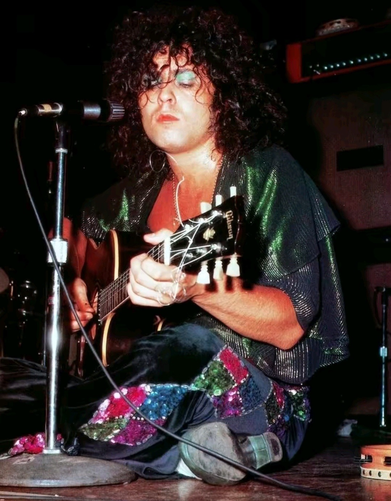
"It was very unusual that I was a mad music fan. I looked my whole life for a girl to follow and couldn't find one. There's probably lots of girls now. Now that women have bisexual or lesbian musicians they can follow, I wonder how that's changed for girls and how they are fans. But I found ones as close as I could get: it was a wake up call to my sexuality to explore it following people like Marc Bolan and David Bowie. I almost felt I could be them. You get it all a bit confused. I fancied Bolan but I think at that age, you don't really realize the difference between fancying and projecting. I could fantasize about meeting Marc Bolan in the street, or Scott Walker, and it wasn't a threatening or frightening fantasy. They were such feminine men, they wore girls' clothes, I could copy it. I could wear Marc Bolan's girls' shoes."2
To speak a little bit more frankly for a moment, androgyny is also…hot. It’s alluring. It’s wrong and rule-breaking. It’s definitionally evasive, which just makes you want to squint your eyes, draw closer to it, and try to bring it into focus.
It “dwells in a distance,” constantly evading definition.3
Earlier left-leaning underground rock subcultures often had a weird relationship with sexuality in both music and music fan practices. The highly political DC-based emocore scene of the late 80s was often anti-pornography for the way it oppressed women, and this infused the scene with a general sense that music should be about political activism, not the expression of sexuality. As emo moved into the 90s, songs about romantic heartbreak became so common that they were stereotypical, but the actual expression of sexuality in lyrics, fashion, or stage performance still remained largely out of reach. The rock underground of the time organized around the notion that music culture should be about the music rather than what people look like, which further reinforced the tacit repression of sexuality in post-hardcore genres like emo. An anonymous Tumblr user writes (in an extremely well-researched post) about alternative porn star Joanna Angel’s experience starting her career amidst the sexually repressed New Jersey post-hardcore scene of the early 2000s, which was openly hostile to her and her sex work:
Well, with maybe the exception of At The Drive In, who liked to wear catsuits and crawl around onstage sexual style.
“Joanna Angel came up in the exact same scene as My Chemical Romance, Thursday, and Midtown, a scene which stigmatized open sexual expression, at the expense of women and queer people—especially those involved in sex work. When she started her porn site, Burning Angel, she applied the same DIY values that her peers did to their own bands, but faced violence and ostracization from a subculture much too repressed to embrace such blatant expression of female sexuality.”
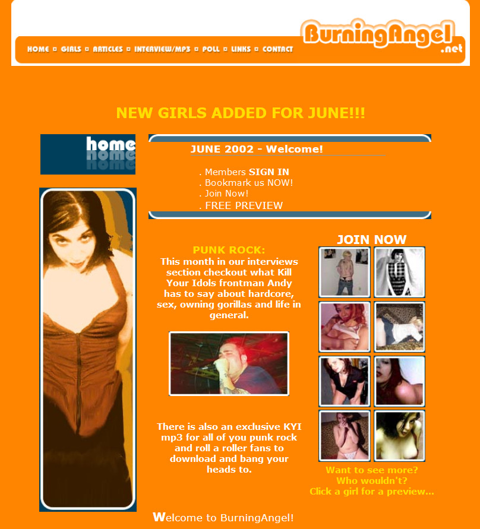
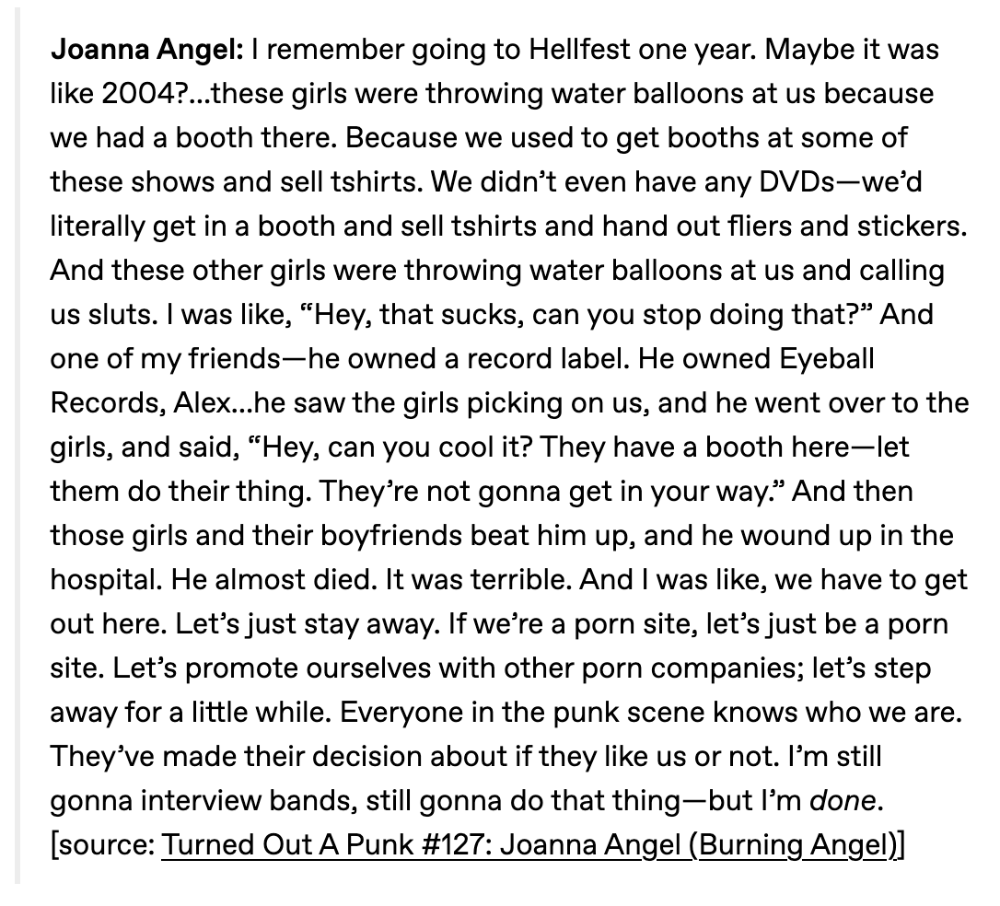
burningangel.net (2002)
This sexually-repressed environment was the one that bands like My Chemical Romance and Fall Out Boy entered into when they hit the scene in the early 2000s. Gerard’s open mission to bring 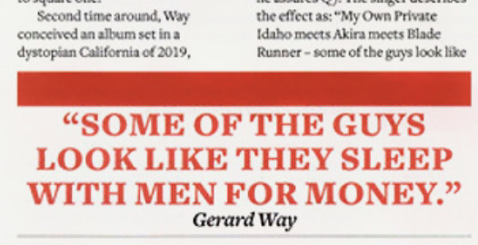
I don’t intend to create some gross narrative that teen girls are inherently horny monsters who only engage with music via their attraction to male idols (enough journalists have spent decades doing exactly that already), but the collective power that teen girls hold in fan spaces when they bond over their attraction to hot, androgynous idols is so powerful. Their problematic love for gender deviance transformed third-wave emo into a space for the expression of feminine and queer desire, which gradually allowed women and queer people to take over the scene. As it turns out, queer lust goes a long way to alienate straight men.
Androgyny is not just attractive, it invites a specifically queer type of attraction. Emo’s embrace of a feminine-androgynous style also tied it to gay male culture of the 2000s, which shared a lot of fashion markers with emo (baby tees, skinny jeans, makeup, etc.) This stylistic overlap fueled a lot of the homophobia hurled at emo bands of the time, especially because third-wave emo’s feminine aesthetics were the main way that it separated itself from the scene’s earlier, more traditionally-masculine iterations. Outside of the United States, emo fashion was also so rhetorically tied to homosexuality that it formed the basis for hate crimes against emos in Mexico4 and Iraq.5
Vaguely-queer fashion and androgyny invited queer desire, which created a credibility problem for emo. How could a subculture centered around anti-sex attitudes account for feminine desire and the sexualization of its biggest bands? The reality was that it couldn’t, and emo needed to split up. It turns out that liking a band that gets featured regularly in 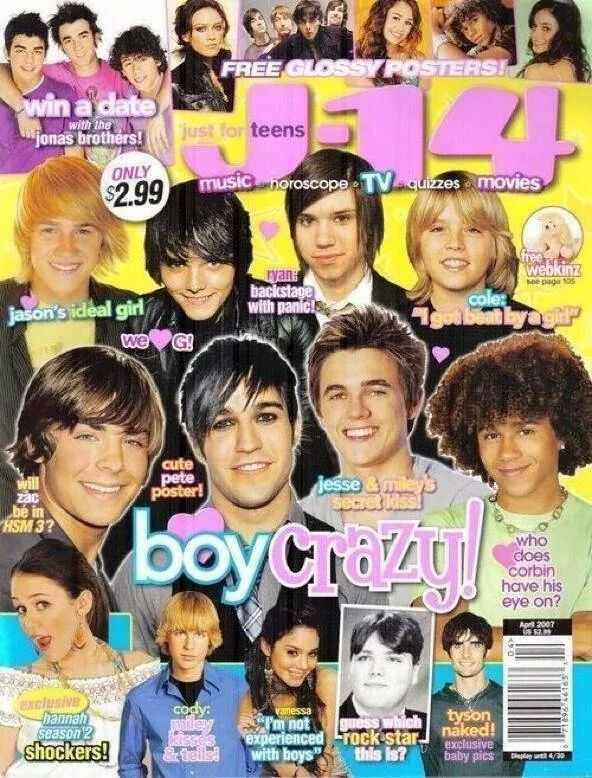
It’s also important to stress that emo aesthetics are purposely stupid. Especially once we get to the latter half of the 2000s, spectacle and excess became emo’s driving purpose. Emo also took on a camp sensibility inspired by rock history, queer culture, and Japanese fashion.
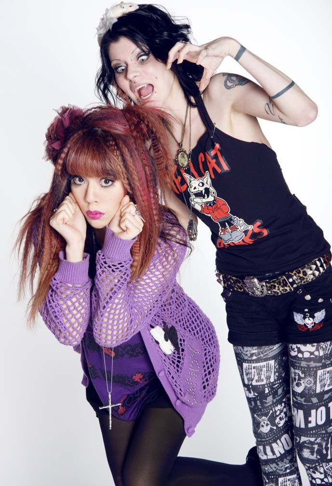
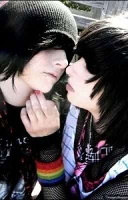
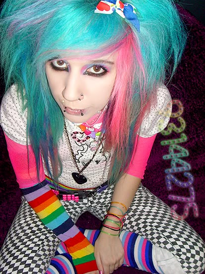
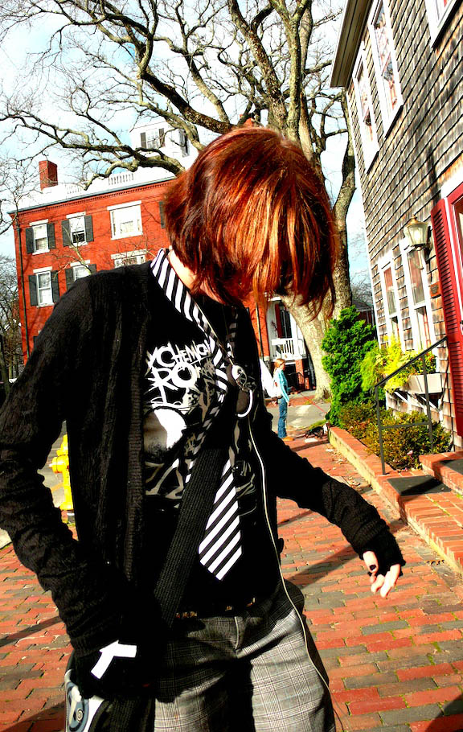
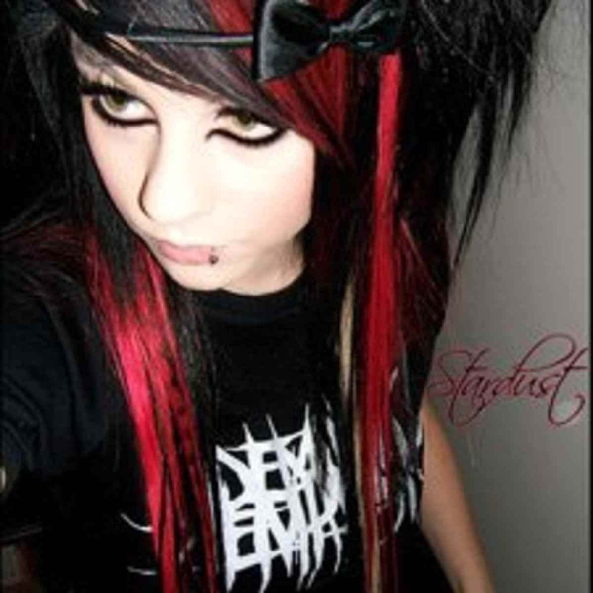
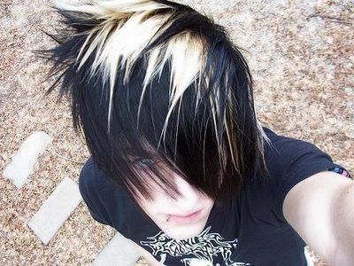
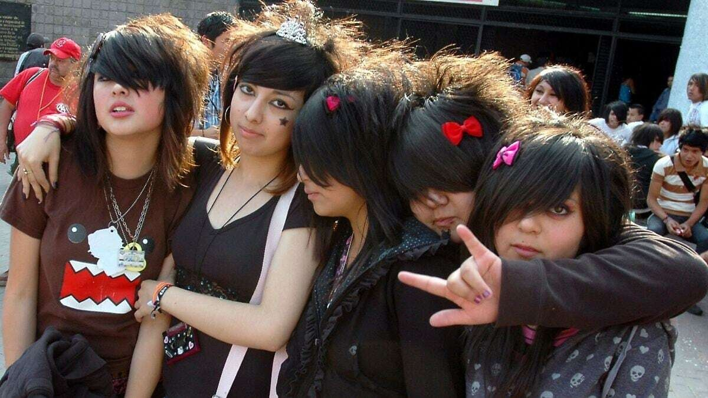
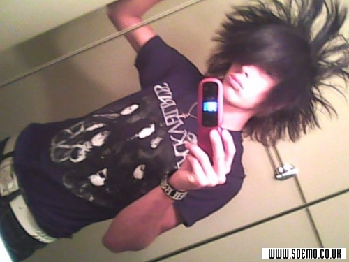
Across all genders, the emo look consisted of things like women’s skinny jeans, makeup, painted nails, huge stylized hair, and other feminine or queer-coded accessories. “Guyliner” was also a huge talking point at the time, and was often used as a shorthand to belittle emo men for their embrace of feminine-coded emotions and aesthetics. Emo’s look in this new era was all about drama, gender bending, and doing too much.
In “Notes on Camp”, Susan Sontag argues that androgyny itself has a camp sensibility to it for the way it plays around with gender. She also says: “Allied to the Camp taste for the androgynous is something that seems quite different but isn't: a relish for the exaggeration of sexual characteristics and personality mannerisms.”6
Sontag emphasizes here that androgyny and camp are tied together because they both reject mainstream gender norms. Androgyny subverts which bodies are allowed to do what, and camp blows masculinity and femininity up so big that the concept of gender itself becomes artificial, performative, and ridiculous—but, always in an affectionate, fun way. Both androgyny and camp reveal the artificiality of gender.
By embracing feminine androgyny and dramatizing certain emotional states like sadness and (queer) lust, emo embodies this camp sensibility. Even further, the intense, wallowing sadness so stereotypical of emo in the popular imagination is a lot more self-aware and ironic than people often realize. Certainly emo appeals to angsty teenagers because it gives them an outlet for negative emotions, but the subculture’s day-to-day operations are more about just making jokes online.7 A lot of emo is also about taking the concept of sadness and blowing it up so big and so dramatic that it becomes a cheeky performance for people in-the-know. It’s serious, but also knows how to laugh at itself. In my personal experience, emo has a lot more in common with drag culture than the hardcore scene it emerged from.
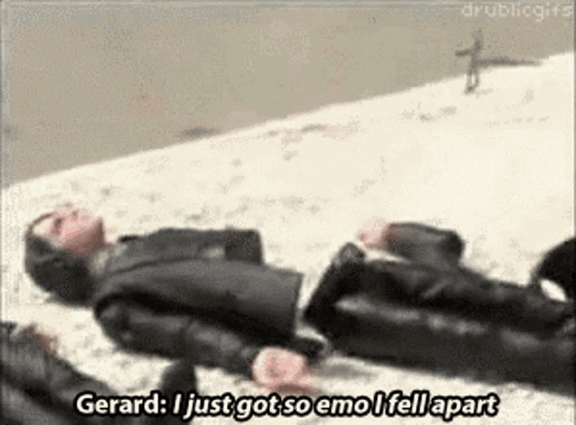
The eleventh track off My Chemical Romance’s 2004 album Three Cheers For Sweet Revenge boasts what in my opinion is one of the greatest song titles of all time: “It’s Not A Fashion Statement, It’s A Fucking Deathwish.” Obviously as someone invested in the queer history of third-wave emo I’m somewhat biased in my opinion here, but this phrase so perfectly captures the tension between emo androgyny in the 2000s and the general public’s unwillingness to acknowledge queerness in emo unless doing so involved a homophobic slur. Music journalists of the time tended to either trivialize emo men wearing women’s clothing and makeup (“guyliner”) or ignore it entirely if they were trying to take the band seriously. But in this particular song title, Gerard makes clear: “I am not dressing like girl for clout, I’m doing it in an attempt to root out the homophobia and misogyny embedded in our scene. And dressing this way is fucking dangerous.”
As a whole, emo’s engagements with gender have historically been one of its more successful political angles. When My Chemical Romance and Fall Out Boy hit the scene in the early 2000s, mainstream rock music had a clear hypermasculinity problem. The success that nu metal found in the late 90s along with the absolute disaster that was Woodstock 99 suggested that rock was quickly becoming a genre for violent, misogynistic meatheads who just wanted to punch each other while Fred Durst yelled about girls fucking themselves with baked goods. The style of the era was an oversized t-shirt, huge cargo shorts, a backwards baseball cap, and maybe some white guy dreadlocks if you were really committed to the look. In this type of environment, androgynous men dressing like hot girls and kissing each other onstage pissed people off. At Reading Festival 2006, My Chemical Romance and Panic! At The Disco were both notoriously bottled by crowds there to see dude-favorite thrash band Slayer, not the gay bands that teen girls liked. MCR was dodging bottles onstage again at Download 2007, as you can see in this four-pixel video. I guess these guys just really needed to throw a plastic bottle at Gerard Way’s head to reinforce their own masculinity in a culture that believed real rock was dudes in metal t-shirts shredding guitar solos.
(For what it’s worth, Ray Toro was shredding more complicated guitar solos than the guys in Slayer anyway. He just happened to be wearing a costume jacket while doing it, so his skills didn’t count.)
Regardless, emo’s campy, androgynous aesthetics queered and feminized the subculture, ultimately transforming emo into a space that centered feminine and queer values. Emo became so intertwined with queerness (both explicitly and otherwise) that it became a target for homophobic violence, and its efforts to take femininity seriously attracted a disproportionately queer and feminine fanbase compared to other rock subcultures. As a final note, it’s worth noting that the biggest emo bands (mostly) embraced their status as quote-unquote “girl/gay bands” with large queer and femme audiences. My Chemical Romance in particular advocated for gender equality in the scene early on and made constant efforts to alienate violent straight men from their fanbase. They were notorious for throwing dudes out of their pit if they got too rowdy and started hurting the smaller girls up front, even if quelling the crowd’s enthusiasm hurt their rock credibility. They knew that young women loved them, and they wanted to protect these audiences as best they could. They knew they existed for the girls and the gays. As Gerard once put it so succinctly during one of these crowd expulsions:
“THAT GUY IN THE PIT NEVER GOT THE MEMO!! IF YOU DON’T LIKE MY CHEMICAL ROMANCE, YOU WAIT OUTSIDE FOR YOUR GIRLFRIEND!!!!”
1 Viv Albertine, Clothes, Clothes, Clothes. Music, Music, Music. Boys, Boys, Boys.: A Memoir (Thomas Dunne Books, 2014): 161-171.
2 Hannah Ewens, Fangirls: Scenes From Modern Music Culture (University of Texas Press, 2020): 90.
3 Francette Pacteau, “The Impossible Referent: Representations of the Androgyne,” in Formations of Fantasy, ed. Victor Burgin, James Donald, and Cora Kaplan (Methuen & Co., 1986): 74.
4 Marissa López. “¿Soy Emo, Y Qué? Sad Kids, Punkera Dykes and the Latin@ Public Sphere,” Journal of American Studies 46, no. 4 (2012): 895–96.
5 Achim Rohde, “Gays, Cross-Dressers, and Emos: Nonnormative Masculinities in Militarized Iraq,” Journal of Middle East Women’s Studies 12, no. 3 (2016): 433–49.
6 Susan Sontag, “Notes on ‘Camp,’” in Against Interpretation (Farrar, Straus, & Giroux, 1966): 279.
7 Judith May Fathallah, Emo: How Fans Defined a Subculture (University of Iowa Press, 2020): 78-101.